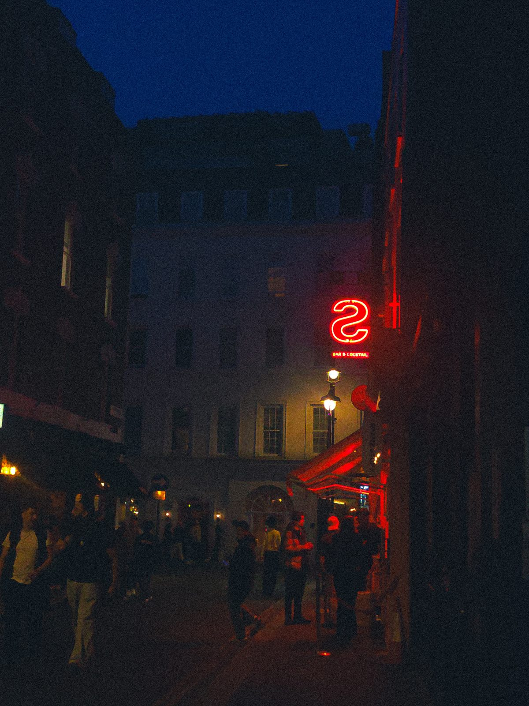
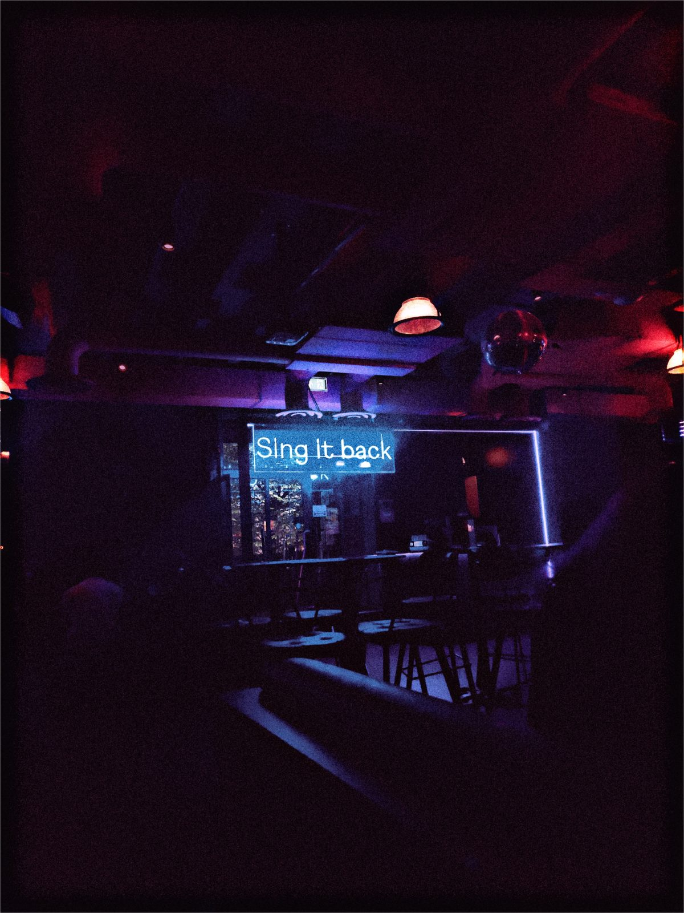
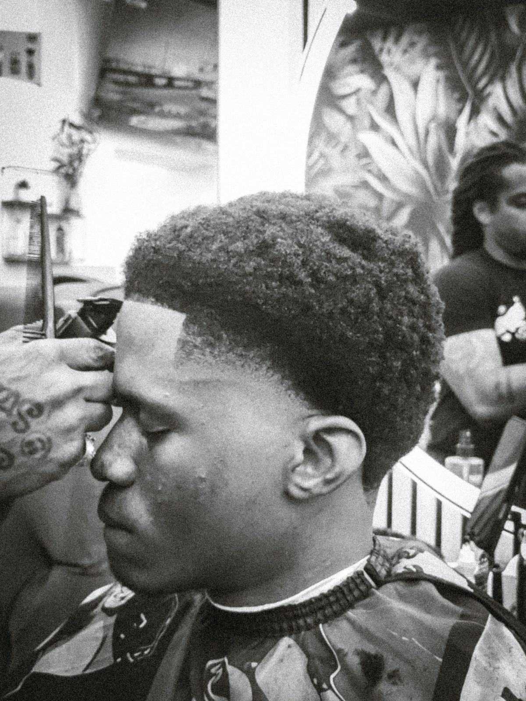

Current entry /
Somewhere between code and creativity.
I'm finding my way back into software engineering while exploring how AI is changing the way we build things. Alongside that, I'm still drawn to the creative side of life — the barbershop, photography, and the people and places that make London interesting.
- Writing software
- ~8 years
- Studied
- MSc Artificial Intelligence, Northumbria University London
- Behind the chair
- Barber, London
- Thinking about
- Agentic AI in real workflows

